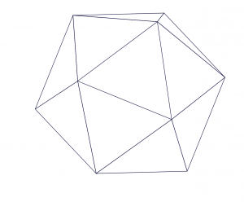
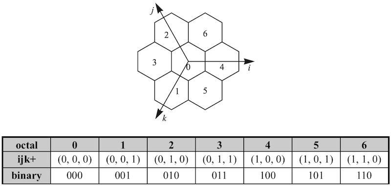

1. STIndex 概览
1.1 简介
STIndex提供了一种开箱即用的时空索引. 目前支持基于时间点及时间周期的时间索引. 其空间索引依赖于GeoIndex, GeoIndex提供了基于离散全球网格(discrete global grid, DGG)的空间索引, 底层由空间填充曲线(Space-filling curve, SFC)及H3地理空间索引系统(H3 geospatial indexing system)提供支持. GeoIndex重点关注二维的平面空间索引(即对经纬度的索引), 因为几乎没有日常应用会关注高程值. 虽然H3只支持平面索引, 但是GeoIndex实现的底层空间填充曲线支持任意维度的索引. GeoIndex主要提供了以下功能:
- 给定一个经纬度点, 获取指定索引类型及分辨率下的索引值;
- 给定索引值及其对应的索引类型和分辨率, 获取其对应的经纬度边界范围, 或其中心点;
- 给定一个经纬度边界范围, 获取其对应的索引值区间;
- 给定索引值及其对应的索引类型和分辨率, 获取其父层级的索引值;
- 给定索引值及其对应的索引类型和分辨率, 获取其子层级的索引值区间;
- 给定索引值及其对应的索引类型和分辨率, 获取其邻居空间单元的索引值.
此外, 值的说明的是, GeoIndex本身由Java语言实现了一个完整的、支持任意维度索引的空间填充曲线库, 而其对H3的支持只是封装了Uber官方给出的Java Binding.
1.2 用例
Updating...
2. 时空索引
2.1 基本概念
Updating...
2.2 时间索引
Updating...
2.3 空间索引
2.3.1 空间填充曲线
空间填充曲线是一种基于矩形网格的、递归四叉剖分的空间索引. 理论上, 空间填充曲线可以对任意维的数据进行索引, STIndex所实现的空间填充曲线库本身也支持任意维度的索引. 但是直接将时间或高程等维度用空间填充曲线进行索引需要额外的研究, 因此STIndex只利用空间填充曲线对经纬度进行索引. 目前, STIndex已经完整实现了Z-Order曲线及Hilbert曲线, 后续将添加对XZ-Order曲线的支持.
Z-Order曲线及Hilbert曲线的剖分方式如图1所示. 现有的研究表明, Hilbert曲线的性能优于Z-Order曲线, Z-Order曲线的优势是实现简单.
| 图1. Z-Order曲线(上), Hilbert曲线(下) |
|  |  |
| 图1. 正二十面体(左), 将地球投影到正二十面体(中), 每个面的基本单元(右) |
 |  |
| 图2. 7孔径划分法(左), 中心位置索引(右) |